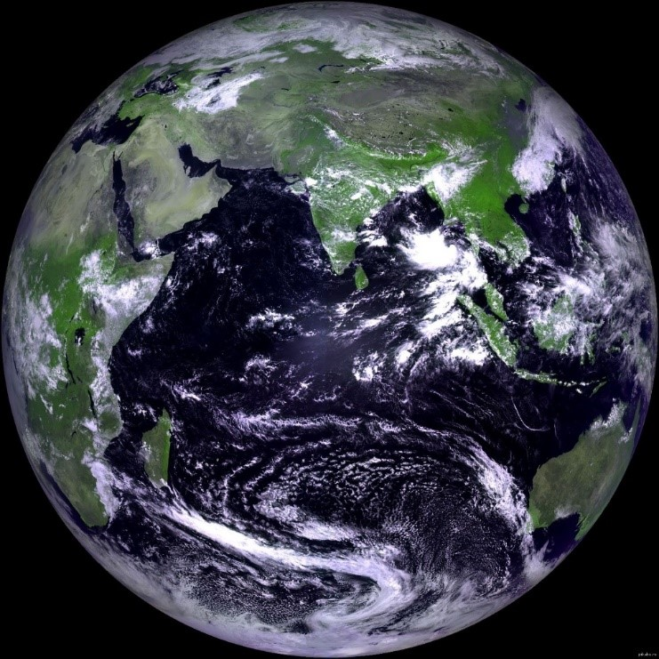

Земля  Третья планета от Солнца — это наша Земля. Она образовалась около 4,5 миллиарда лет назад, и примерно в то же время получила единственный и хорошо известный нам спутник – Луну. Луна стабилизировала земной наклон и стала причиной возникновения на Земле приливов. Всем хорошо известно, что мы живем на этой планете. Поэтому ответ на вопрос «Какая планета от Солнца третья?» сможет угадать даже первоклассник. Земля единственная из всех планет земной группы содержит большие запасы воды и имеет атмосферу, содержащую свободный кислород. Все это сделало возможным существование на ней более 8,7 миллиона видов живых организмов. Третья планета Солнечной системы обладает большей плотностью и размерами по сравнению с Венерой, Марсом и Меркурием. Радиус Земли составляет в среднем 6371,16 км. Благодаря наличию сильного магнитного поля, создаваемого ядром из расплавленного железа, Земля защищена от влияния звездной радиации. Земля делает полный оборот вокруг Солнца по окружности за 365,25 суток. Средние солнечные сутки составляют 24 часа. 10 фактов о Земле: Твердь земной коры относительна. Поверхность планеты на самом деле состоит из литосферных плит, находящихся в постоянном движении. Тектонические плиты плавают на поверхности содержащейся в ядре Земли магмы. Именно тектоника несет ответственность за землетрясения, извержения вулканов, океанские впадины и собственно субдукцию, когда одна плита заходит под другую, в результате чего образуется новая земная твердь. А еще тектоника спасает Землю от парникового эффекта: организмы умирают и выделяют углекислый газ. Если бы они не поглощались землей, это привело бы к критической массе углекислого газа в атмосфере. Земля бы разогрелась и превратилась в ад. Земля на самом деле не шар. Такое название для геометрической формы нашей планеты является научным консенсусом. В действительности Земля имеет форму сплюснутого шара – сжатого сфероида, или геоида. Сплюснута планета в направлении полюсов, а ее радиус в районе «талии» на 21 км больше. Этим, кстати, объясняется и другой интересный факт: величайшей горной вершиной в мире, с учетом формы Земли, является не Джомолунгма (или Эверест), как принято считать, а неактивный вулкан Чимборасо в Эквадоре. Земля состоит из железа, кислорода и кремния. Если планету разделить по ее составу, выглядеть этот ряд будет так: 32,1 % железа, 30,1% кислорода, 15,1% кремния и 13,9% магния. При этом большая часть железа фактически находится в земном ядре – 88%. Что касается земной коры, то в ней больше всего кислорода – 47%. 70% поверхности Земли не является землей. Это вода. Когда впервые люди посмотрели на Землю из космоса, именно тогда она получила свое второе имя – Голубая планета. Оставшиеся же 30% занимает так называемая континентальная кора со средней толщиной 35–45 км, доходящей до 75 км под горными массивами. Поднятие уровня Мирового океана, происходящее в результате глобального потепления и таяния ледников, – один из главных поводов для беспокойства человечества. Возможно, скоро процентное соотношение суши и воды придется пересмотреть. Земная атмосфера простирается на расстояние до 10 тыс. км. Состоит атмосфера из нескольких слоев: тропосферы, стратосферы, мезосферы, термосферы и экзосферы. На расстоянии до 50 км от поверхности она более плотная, и по мере удаления от нее плотность и давление уменьшаются. Фактически 75% земной атмосферы содержится в первых 11 км от поверхности планеты. Экзосфера – самый высокий слой – является «воротами» в космическое пространство, где атмосферы нет вообще. Экзосфера в основном состоит из водорода с очень низкой плотностью, гелия и ряда тяжелых молекул – азота, кислорода и углекислого газа. Расплавленное «железное» ядро Земли создает магнитное поле. Оно называется магнитосферой. По сути, сама планета представляет собой большой магнит с полюсами. По мнению ученых, магнитное поле генерируется в расплавленном внешнем ядре Земли, где жара создает конвекционные движения проводящих материалов, генерирующих электрические токи. Без магнитосферы планете пришел бы конец. Солнечный ветер ударил бы по Земле напрямую, обрушив на нее огромное количество излучения. Именно истощение магнитного щита, по одной из версий, стало причиной гибели предположительно плодородного в прошлом Марса. Вращение Земли вокруг своей оси на самом деле занимает не 24 часа. Полный оборот планеты занимает 23 часа, 56 минут и 4 секунды. Это и есть звездные сутки, как их называют астрономы. Мы можем решить, что в таком случае сутки на самом деле на 4 минуты короче, время это будет накапливаться, и спустя несколько месяцев день станет ночью, а ночь – днем. Но не стоит забывать, что Земля вращается вокруг Солнца. А само Солнце постоянно сдвигается со своей позиции примерно на один градус. Если эти два движения сложить, получится как раз 24 часа. Длительность земного года составляет вовсе не 365 дней. Цифра эта в реальности выглядит так: 365,2564 дня. Эти дополнительные 0,2564 дня приводят к появлению раз в четыре года високосного года, в котором 366 дней. Исключением из этого правила является, если год делится на 100 (1900, 2100 и т. д.), и если он при этом не кратен 400 (1600, 2000 и т. д.). Известно, что у Земли есть одна луна с незатейливым названием Луна. Это единственный спутник нашей планеты. По крайней мере официально. Между тем существуют астероиды, орбита которых схожа с орбитой Земли, – Круитни (3753 Cruithne) и 2002 AA29. Они принадлежат к классу астероидов, сближающихся с Землей (АСЗ). Диаметр астероида Круитни составляет 5 км, и иногда его называют «второй луной». Несмотря на схожесть орбит, у Круитни свой уникальный путь вокруг Солнца. Диаметр 2002 AA29 составляет всего 60 м, и его орбита вокруг Земли имеет форму лошадиной подковы, каждые 95 лет приближая его к нашей планете. Примерно через 600 лет он может стать квазиспутником Земли, что, по мнению ученых, делает астероид перспективным для исследований. Земля – единственная на сегодняшний день известная планета, на которой есть жизнь. Это так, несмотря на открытие воды и органических молекул на Марсе, аминокислот в космических туманностях, перспективы существования жизни под ледяной коркой луны Юпитера Европы или на сатурнианском Титане. Но если жизнь на других планетах есть, эксперименты и научная работа обязательно помогут ее найти. Например, NASA объявило о создании проекта NExSS. Его целью является обработка данных, присылаемых космическим телескопом «Кеплер» и другими схожими аппаратами, а также изучение экзопланет. Но, по сути, проект предназначен для поисков внеземной жизни. И все же, желая ученым удачи в поисках, пока приходится признавать, что Земля – единственное место, пригодное для жизни. И это самый главный факт в ее истории.